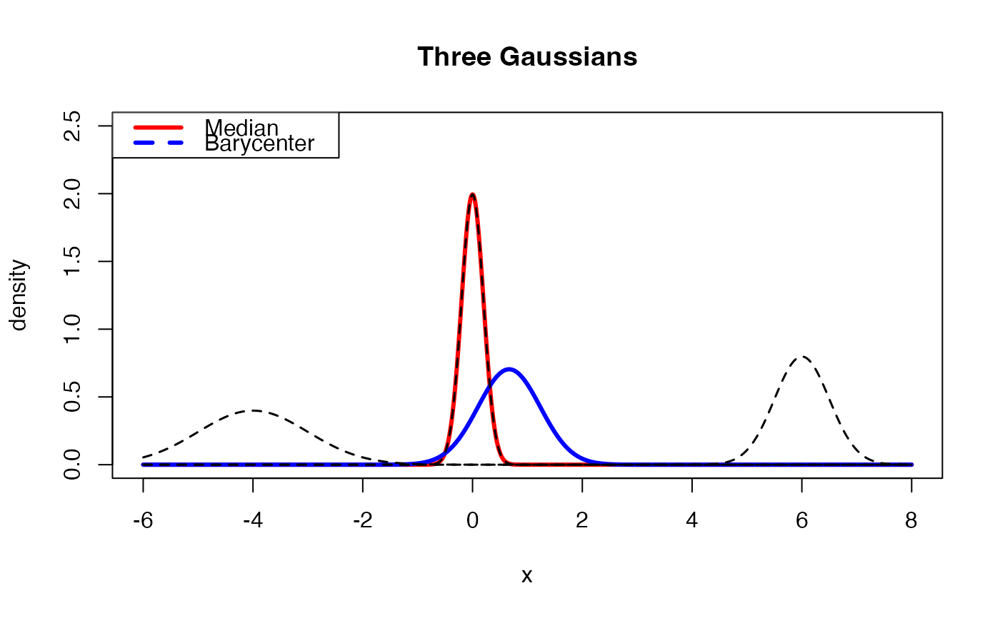

Wasserstein Median of Gaussian Distributions in \(\mathbf{R}\)
gaussmed1d.RdGiven a collection of Gaussian distributions \(\mathcal{N}(\mu_i, \sigma_i^2)\) for \(i=1,\ldots,n\), compute the Wasserstein median.
Arguments
- means
a length-\(n\) vector of mean parameters.
- vars
a length-\(n\) vector of variance parameters.
- weights
a weight of each image; if
NULL(default), uniform weight is set. Otherwise, it should be a length-\(n\) vector of nonnegative weights.- ...
extra parameters including
- abstol
stopping criterion for iterations (default: 1e-8).
- maxiter
maximum number of iterations (default: 496).
Value
a named list containing
- mean
mean of the estimated median distribution.
- var
variance of the estimated median distribution.
See also
gaussmedpd() for multivariate case.
Examples
# \donttest{
#----------------------------------------------------------------------
# Tree Gaussians
#
# Three Gaussian distributions are parametrized as follows.
# Type 1 : (mean, sd) = (-4, 1)
# Type 2 : (mean, sd) = ( 0, 1/5)
# Type 3 : (mean, sd) = (+6, 1/2)
#----------------------------------------------------------------------
# GENERATE PARAMETERS
par_mean = c(-4, 0, +6)
par_vars = c(1, 0.04, 0.25)
# COMPUTE THE WASSERSTEIN MEDIAN
gmeds = gaussmed1d(par_mean, par_vars)
# COMPUTE THE BARYCENTER
gmean = gaussbary1d(par_mean, par_vars)
# QUANTITIES FOR PLOTTING
x_grid = seq(from=-6, to=8, length.out=1000)
y_dist1 = stats::dnorm(x_grid, mean=par_mean[1], sd=sqrt(par_vars[1]))
y_dist2 = stats::dnorm(x_grid, mean=par_mean[2], sd=sqrt(par_vars[2]))
y_dist3 = stats::dnorm(x_grid, mean=par_mean[3], sd=sqrt(par_vars[3]))
y_gmean = stats::dnorm(x_grid, mean=gmean$mean, sd=sqrt(gmean$var))
y_gmeds = stats::dnorm(x_grid, mean=gmeds$mean, sd=sqrt(gmeds$var))
# VISUALIZE
opar <- par(no.readonly=TRUE)
plot(x_grid, y_gmeds, lwd=3, col="red", type="l",
main="Three Gaussians", xlab="x", ylab="density",
xlim=range(x_grid), ylim=c(0,2.5))
lines(x_grid, y_gmean, lwd=3, col="blue")
lines(x_grid, y_dist1, lwd=1.5, lty=2)
lines(x_grid, y_dist2, lwd=1.5, lty=2)
lines(x_grid, y_dist3, lwd=1.5, lty=2)
legend("topleft", legend=c("Median","Barycenter"),
col=c("red","blue"), lwd=c(3,3), lty=c(1,2))

par(opar)
# }